第 19 讲：相机、镜头与光场
从针孔到薄透镜，理解相机如何成像、曝光与景深，为渲染中的虚拟相机打下物理基础。
◆ 学完这一讲，你应该能
学完能解释针孔成像与透镜成像的区别，并说明为什么需要镜头。
学完能推导薄透镜方程与高斯光线追踪构图，理解物距、像距与焦距的关系。
学完能计算视场角（FOV）并说明焦距与传感器尺寸对 FOV 的影响。
学完能解释曝光三要素（光圈、快门、ISO）及其副作用（景深、运动模糊、噪点）。
学完能计算弥散圆（CoC）大小并理解景深（DOF）的成因与影响因素。
学完能在渲染器中实现薄透镜光线追踪以模拟景深效果。
核心结论速记
成像 = 合成 + 捕获；相机通过镜头将场景光线聚焦到传感器上。
针孔相机无镜头，每个传感器点接收来自所有方向的光，导致图像模糊且进光量少。
薄透镜方程：1/f = 1/z_o + 1/z_i，描述物距、像距与焦距的关系。
视场角 FOV = 2 arctan(h / (2f))，焦距越短 FOV 越大，传感器尺寸影响等效焦距。
曝光量 H = T × E，由快门时间 T 和辐照度 E（受光圈和焦距控制）决定，ISO 是增益。
F 数 N = f / D，表示光圈大小，F 数越小光圈越大，进光量越多，景深越浅。
弥散圆 CoC 与光圈直径成正比，与像距和传感器距离之差成正比；景深是 CoC 可接受范围内的物距范围。
薄透镜光线追踪：从传感器像素采样光线，经过镜头随机点，再聚焦到物平面，可模拟景深。
011. 从针孔到镜头：为什么相机需要镜头
相机成像的本质是捕获光线。最早的相机是针孔相机（pinhole camera）：一个暗箱，前面开一个小孔，光线通过小孔投射到后方的传感器上。针孔成像的原理是：物体上每一点发出的光线中，只有沿着直线穿过小孔的那一条能到达传感器，因此每个传感器点只接收来自一个方向的光，形成清晰的像。
但针孔相机有两个致命问题：
- 进光量极少：小孔限制了光线，需要很长的曝光时间。
- 衍射模糊：孔太小时，光的波动性导致衍射，反而使图像模糊。
因此现代相机使用镜头（lens） 来汇聚光线。镜头可以收集更大范围的光线，并将其聚焦到传感器上，从而在短时间内获得足够曝光，同时保持清晰。
课件中展示了尼康 D3 的截面图，可以看到镜头组、光圈、快门和传感器。镜头并非一片透镜，而是由多片透镜组合而成，用于校正像差。
关键直觉：针孔相机是“限制光线方向”，镜头是“弯曲光线方向”。镜头让更多光线参与成像，同时通过折射使来自物点的光线重新汇聚到像点。
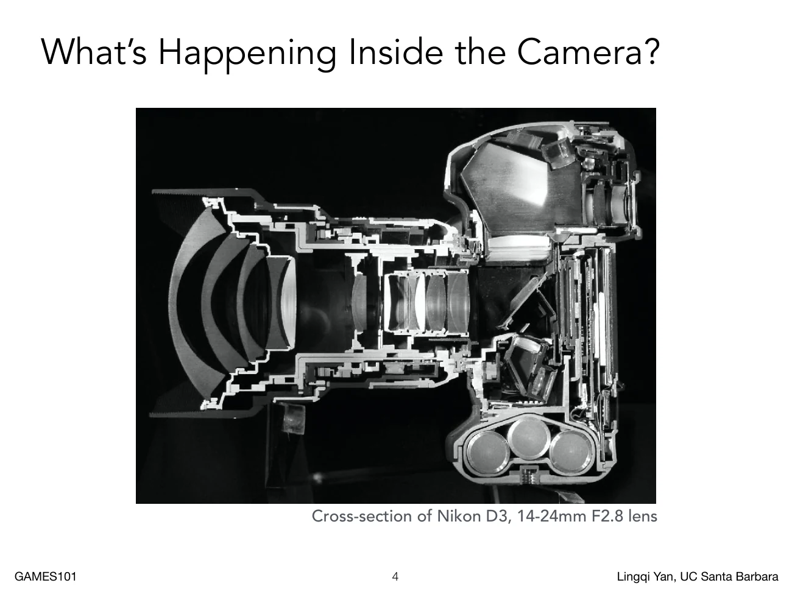
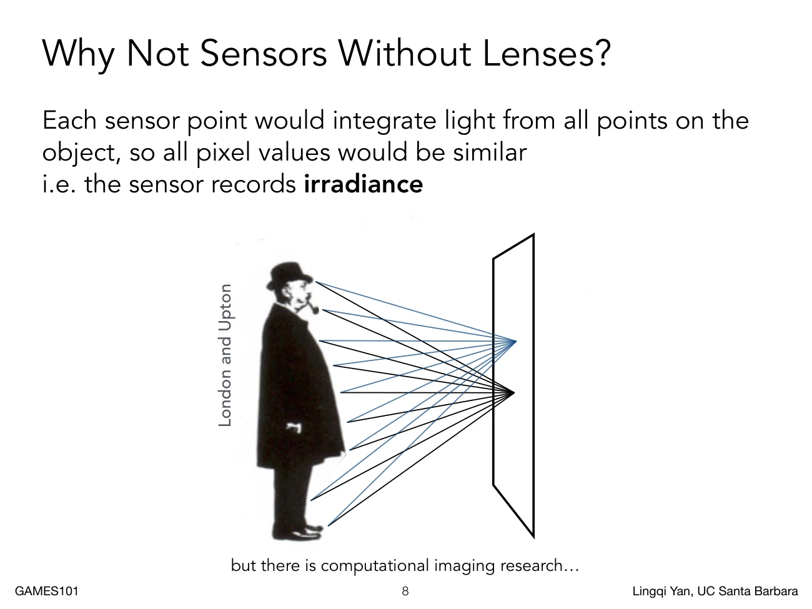
常见坑
误以为针孔越小越清晰 → 孔太小会产生衍射模糊 → 实际针孔相机需要权衡孔径大小。
认为镜头只是“让光通过” → 镜头的作用是汇聚光线并控制进光量 → 理解折射和聚焦。
UE / Unity 落地
在 UE 中，相机（Camera Component）默认使用透视投影，模拟理想针孔模型；若需要景深效果，需额外开启景深（Depth of Field）设置。
Unity 的 Camera 组件同样默认针孔模型，物理相机（Physical Camera）属性可模拟焦距、光圈、快门等。
022. 视场角与焦距：镜头能看到多宽
视场角（Field of View, FOV） 描述相机能看到的场景范围。对于给定的传感器尺寸，FOV 由镜头的焦距（focal length） 决定。
课件给出公式： \[ \text{FOV} = 2 \arctan\left(\frac{h}{2f}\right) \] 其中 \(h\) 是传感器在相应方向上的尺寸（如高度或宽度），\(f\) 是焦距。
直觉：焦距越短，光线偏折越强，相同传感器尺寸下能容纳更宽的场景，因此 FOV 越大。反之，焦距越长，FOV 越小，相当于“放大”远处物体。
历史上，人们常用 35mm 胶片（36×24mm）的焦距来指代视角：
- 17mm 左右：广角（约 104° 对角线）
- 50mm：标准镜头（约 46° 对角线）
- 200mm：长焦（约 12° 对角线）
手机摄像头的“等效焦距”也是基于 35mm 格式的换算。例如，手机主摄等效 28mm，意味着其视角与 35mm 相机上 28mm 镜头相同。
传感器尺寸的影响：对于固定焦距，传感器越小，FOV 越小。为了在小传感器上保持相同 FOV，需要缩短焦距。课件给出关系：焦距与传感器尺寸成正比。
实践意义：在渲染中，我们通常直接指定 FOV 或焦距。UE 的 Camera 组件有 FOV 属性；Unity 的 Camera 也有 Field of View，物理相机还可设置 Focal Length。
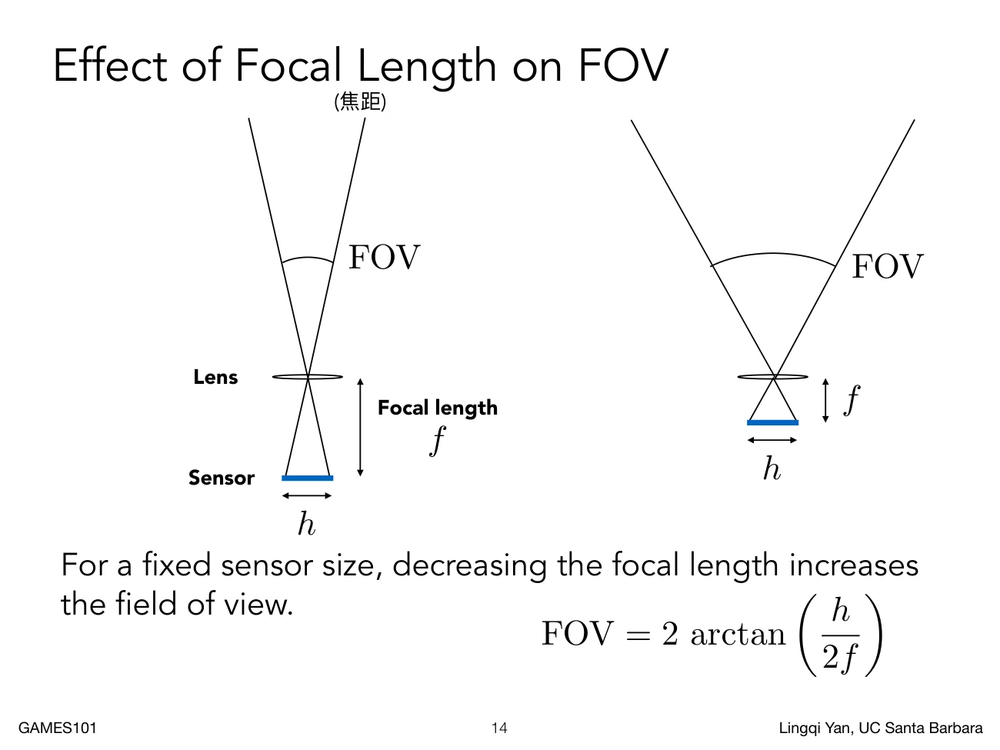
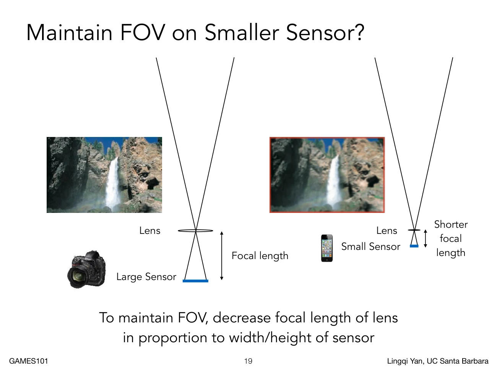
常见坑
混淆水平 FOV 与垂直 FOV → 公式中的 h 对应方向不同 → 明确使用哪个方向的传感器尺寸。
认为焦距决定一切 → 传感器尺寸也影响 FOV → 比较不同系统时需换算等效焦距。
UE / Unity 落地
UE 的 Camera 组件中，Field of View 默认是水平 FOV（90°），可调整；也可通过焦距换算。
Unity 的 Camera 组件中，Field of View 默认是垂直 FOV，可设置；物理相机可指定 Focal Length 和 Sensor Size。
033. 曝光三要素：光圈、快门、ISO
曝光（Exposure） 是传感器接收到的总光量，公式为： \[ H = T \times E \] 其中 \(T\) 是曝光时间（由快门控制），\(E\) 是辐照度（单位面积功率，由光圈和焦距控制）。
三个控制曝光的手段：
- 光圈（Aperture）：通过改变光圈大小控制进光量。光圈大小用 F 数（F-number） 表示，定义为焦距除以光圈直径：\(N = f / D\)。F 数越小，光圈越大，进光量越多。常见 F 数序列：1.4, 2, 2.8, 4, 5.6, 8, 11, 16, 22。
- 快门（Shutter）：控制曝光时间。快门速度越快，曝光时间越短，进光量越少。常见快门速度：1/1000s, 1/500s, 1/250s, 1/125s, 1/60s, 1/30s, 1/15s, 1/8s, 1/4s, 1/2s, 1s。
- ISO（增益）：传感器信号放大倍数。ISO 越高，信号放大越强，图像越亮，但噪点也越多。ISO 200 只需要 ISO 100 一半的光量。
曝光三角：三者相互制约。为了保持相同曝光量，可以调整光圈和快门的组合。例如，F/4 与 1/500s 的组合与 F/5.6 与 1/250s 的组合曝光量相同（因为光圈面积减半，时间加倍）。
副作用：
- 光圈影响景深（Depth of Field）：光圈越大（F 数小），景深越浅。
- 快门影响运动模糊（Motion Blur）：曝光时间越长，运动模糊越明显。
- ISO 影响噪点（Noise）：ISO 越高，噪点越明显。
在渲染中，我们通常不模拟快门和 ISO，但光圈和景深是常见效果。UE 和 Unity 的物理相机都支持光圈、快门、ISO 设置。
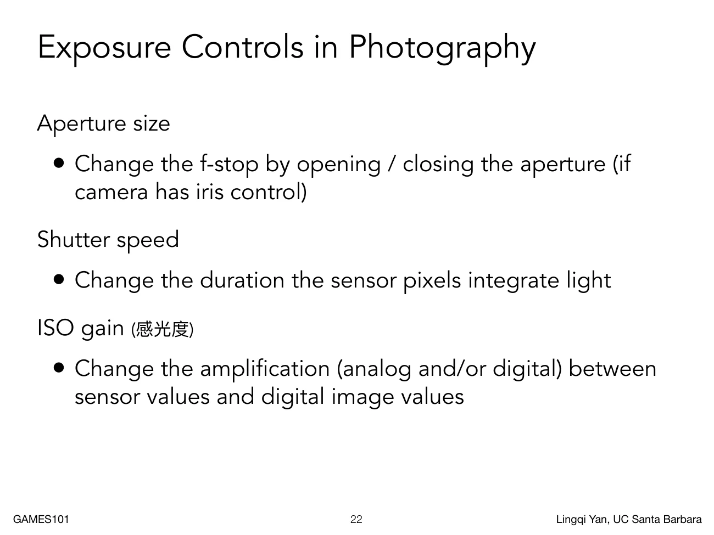
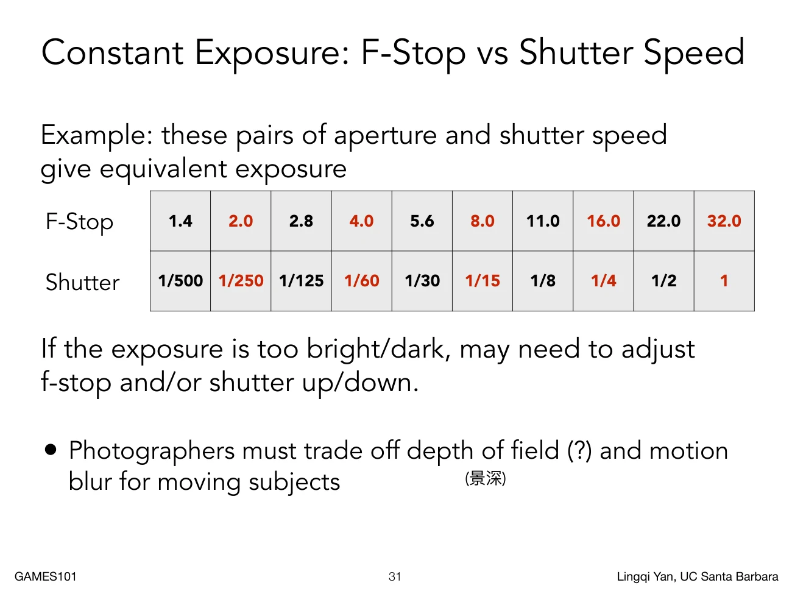
常见坑
认为 ISO 越高越好 → 高 ISO 带来噪点 → 在光线充足时使用低 ISO。
混淆 F 数与光圈大小 → F 数越小光圈越大 → 记住 F 数是焦距与直径的比值。
UE / Unity 落地
UE 的物理相机（Physical Camera）可设置光圈（Aperture）、快门速度（Shutter Speed）和 ISO，用于模拟真实曝光。
Unity 的物理相机同样有 Aperture、Shutter Speed、ISO 设置，并影响景深和曝光。
044. 薄透镜方程与光线追踪构图
真实镜头由多片透镜组成，但为了简化，我们使用薄透镜近似（Thin Lens Approximation）：假设透镜厚度可忽略，所有折射发生在同一平面。
薄透镜的性质：
- 平行于光轴的光线经过透镜后通过焦点。
- 通过焦点的光线经过透镜后平行于光轴。
- 通过透镜中心的光线方向不变。
薄透镜方程（高斯形式）： \[ \frac{1}{f} = \frac{1}{z_o} + \frac{1}{z_i} \] 其中 \(f\) 是焦距，\(z_o\) 是物距（物体到透镜的距离），\(z_i\) 是像距（透镜到传感器的距离）。
牛顿形式：\((z_o - f)(z_i - f) = f^2\)。
高斯光线追踪构图：利用三条特殊光线（平行光线、过焦光线、过心光线）可以确定像的位置和大小。课件通过相似三角形推导出放大率：\(h_i / h_o = f / (z_o - f) = (z_i - f) / f\)。
实践意义：在渲染中，给定物距和焦距，可以计算出像距，从而确定传感器位置，使物体清晰成像。这是实现景深效果的基础。
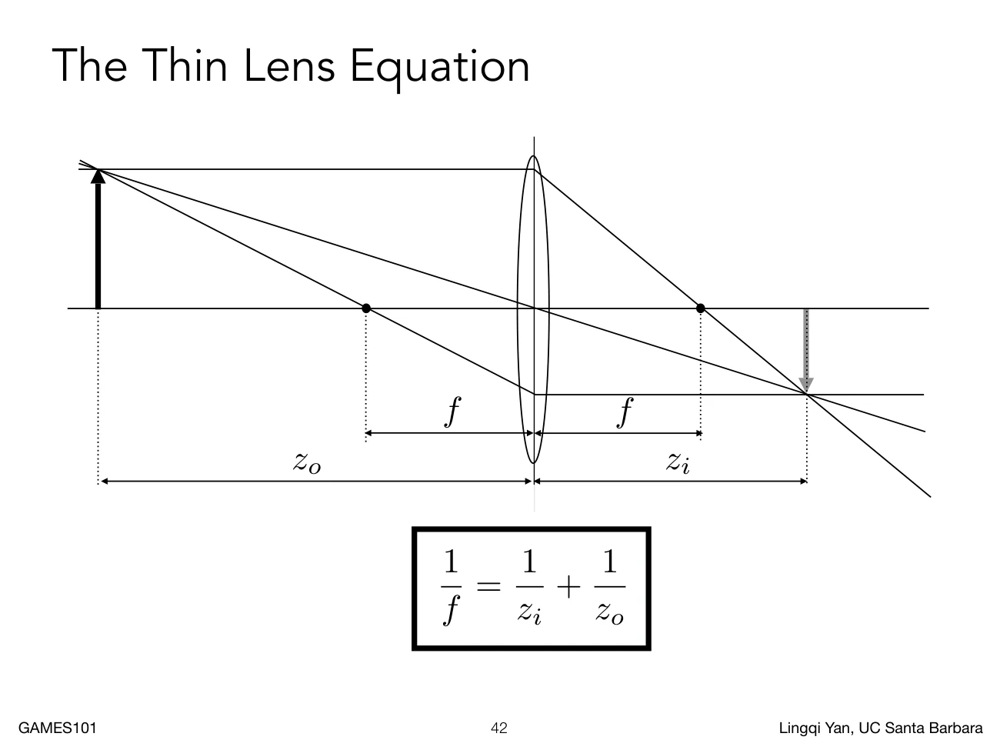
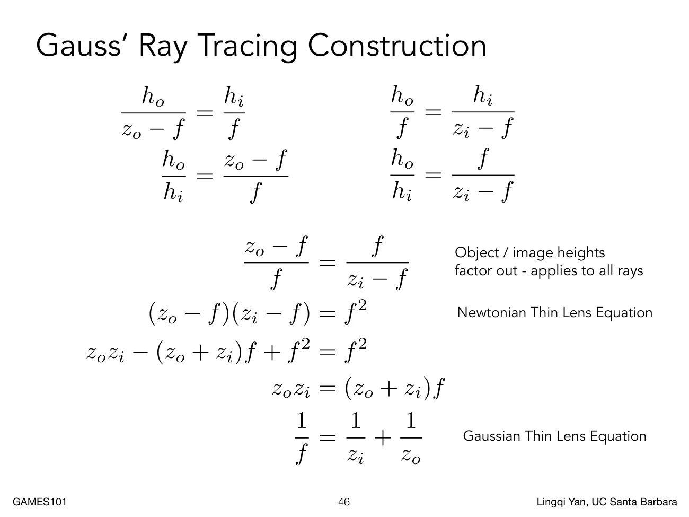
常见坑
混淆物距和像距 → 物距是物体到透镜，像距是透镜到传感器 → 注意公式中的符号。
忽略单位一致性 → 焦距、物距、像距需使用相同单位 → 统一为毫米或米。
UE / Unity 落地
在渲染器中实现薄透镜相机时，需根据薄透镜方程计算对焦距离对应的像距。
UE 的景深效果基于物理相机参数，焦距和光圈影响景深范围。
055. 弥散圆与景深：为什么背景会模糊
当物体不在对焦平面上时，其像点不会汇聚在传感器上，而是形成一个模糊的光斑，称为弥散圆（Circle of Confusion, CoC）。
CoC 大小计算： \[ C = A \frac{|z_s - z_i|}{z_i} \] 其中 \(A\) 是光圈直径，\(z_s\) 是传感器到透镜的距离，\(z_i\) 是对焦平面像距。
直觉：光圈越大（A 越大），或传感器偏离像平面越远（|z_s - z_i| 越大），弥散圆越大，模糊越明显。
F 数与 CoC：由于 \(A = f / N\)，CoC 与 F 数成反比：F 数越小（光圈越大），CoC 越大，景深越浅。
景深（Depth of Field, DOF）：在最终图像中，CoC 小于某个允许值（允许弥散圆）的物距范围，称为景深。景深分为前景深和后景深。
影响因素：
- 光圈越大（F 数小），景深越浅。
- 焦距越长，景深越浅。
- 对焦距离越近，景深越浅。
渲染中的应用：通过薄透镜光线追踪模拟景深。从传感器每个像素发射光线，随机采样镜头上的点，然后计算光线与场景的交点。只有对焦平面上的点会清晰成像，其他点根据 CoC 产生模糊。
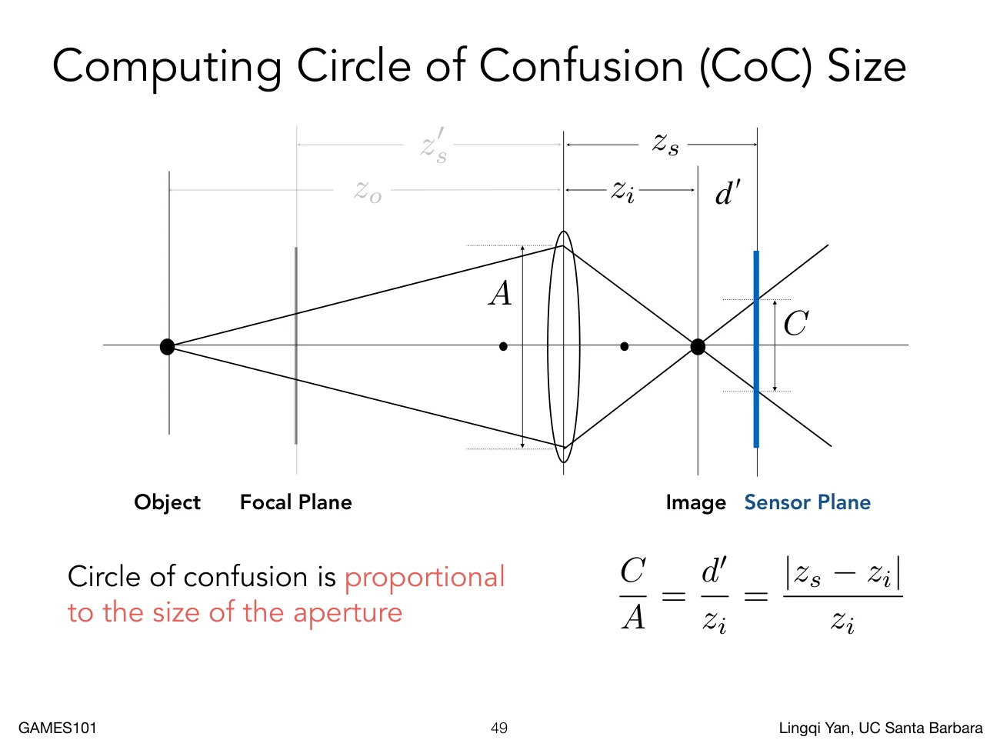
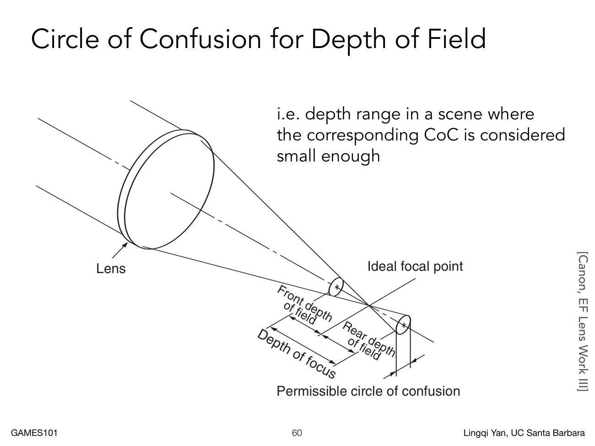
常见坑
认为景深只由光圈决定 → 焦距和对焦距离也影响景深 → 综合考虑。
在渲染中忽略 CoC 与像素大小的关系 → 允许弥散圆通常取像素尺寸的某个倍数 → 根据输出分辨率调整。
UE / Unity 落地
UE 的景深效果（Depth of Field）可设置光圈（F-stop）、焦距和对焦距离，实时计算 CoC。
Unity 的 Post Processing 中的 Depth of Field 效果同样基于物理参数或手动设置。
066. 薄透镜光线追踪：在渲染中模拟景深
在光线追踪中，我们可以用薄透镜模型模拟景深。基本步骤如下：
- 设置参数：选择传感器尺寸、镜头焦距 \(f\)、光圈直径 \(A\)，以及感兴趣物体的深度 \(z_o\)。
- 计算像距：根据薄透镜方程 \(1/f = 1/z_o + 1/z_i\) 计算传感器位置 \(z_i\)。
- 对于每个像素： - 在传感器上采样一个点 \(x'\)。 - 在镜头平面上随机采样一个点 \(x''\)。 - 计算从 \(x''\) 到 \(x'''\) 的光线，其中 \(x'''\) 是物平面上对焦点（通过虚拟光线 \(x'\) 到镜头中心确定）。 - 追踪该光线，计算辐射度。
- 累积：对每个像素多次采样，平均得到最终颜色。
关键点：对焦平面上的点，所有光线都会汇聚到传感器上的同一点，因此清晰；离焦平面上的点，光线在传感器上散开，形成模糊。
实现细节：镜头采样通常使用均匀圆盘采样。采样数越多，噪点越少。
与针孔相机的区别：针孔相机所有光线都通过一个点，没有景深；薄透镜相机光线通过镜头上的不同点，产生景深。
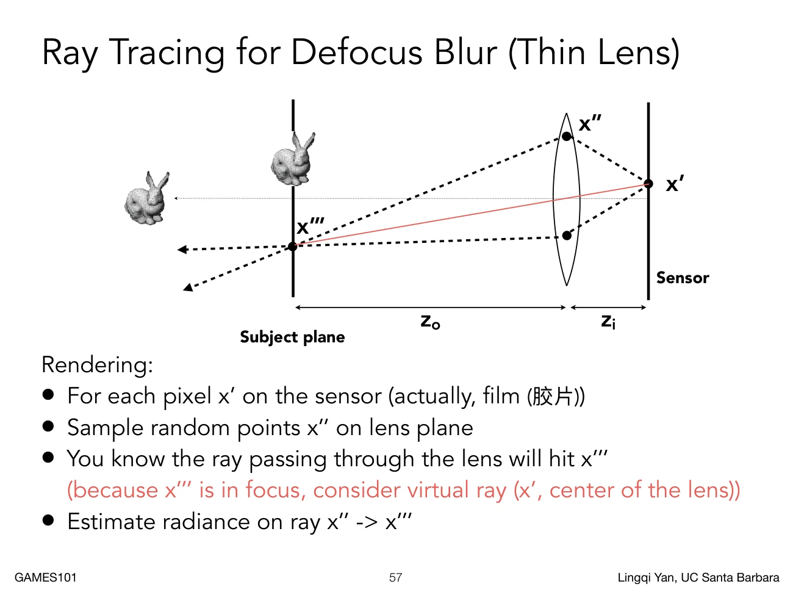
补充说明
实际渲染中，镜头采样通常使用低差异序列（如 Halton）以减少噪点。
常见坑
采样镜头时使用固定点 → 无景深效果 → 需随机采样。
忽略对焦距离的计算 → 导致对焦错误 → 确保根据物距计算像距。
UE / Unity 落地
在 UE 中，光线追踪景深可通过后处理实现，但实时渲染通常使用基于屏幕空间的景深。
离线渲染器（如 Arnold、Cycles）支持薄透镜相机模型，可设置光圈和焦距。
薄透镜光线追踪伪代码（cpp）
for each pixel (x, y):
Color sum = 0;
for i in 0..N-1:
// 传感器上的点
Point2f pSensor = (x + rand(), y + rand());
// 镜头上的随机点（圆盘采样）
Point2f pLens = sampleDisk() * apertureRadius;
// 计算对焦点：通过虚拟光线从 pSensor 到镜头中心
Point3f focalPoint = computeFocalPoint(pSensor, lensCenter, focalDistance);
// 光线起点为镜头点，方向指向对焦点
Ray ray(pLens, normalize(focalPoint - pLens));
sum += trace(ray);
return sum / N;引擎对照表
| 概念 / 效果 | Unreal Engine | Unity |
|---|---|---|
视场角（FOV） | Camera 组件的 Field of View 属性（水平） | Camera 组件的 Field of View 属性（垂直） |
焦距 | 物理相机中的 Focal Length | 物理相机中的 Focal Length |
光圈 | 物理相机中的 Aperture（F-stop） | 物理相机中的 Aperture |
景深 | 后处理中的 Depth of Field 效果 | Post Processing 中的 Depth of Field 效果 |
曝光 | 物理相机中的 Exposure 设置（快门、ISO） | 物理相机中的 Shutter Speed、ISO |
术语双语表
| English | 中文 | 说明 |
|---|---|---|
| Pinhole Camera | 针孔相机 | 无镜头，通过小孔成像，进光量少且可能衍射模糊。 |
| Focal Length | 焦距 | 透镜中心到焦点的距离，决定视场角。 |
| Field of View (FOV) | 视场角 | 相机能看到的场景角度范围，与焦距和传感器尺寸有关。 |
| Exposure | 曝光 | 传感器接收的总光量，由快门时间和辐照度决定。 |
| F-Number (F-Stop) | F 数 | 焦距与光圈直径的比值，表示光圈大小，F 数越小光圈越大。 |
| Circle of Confusion (CoC) | 弥散圆 | 离焦物点在传感器上形成的模糊光斑大小。 |
| Depth of Field (DOF) | 景深 | 图像中清晰的范围，由光圈、焦距和对焦距离决定。 |
| Thin Lens Equation | 薄透镜方程 | 1/f = 1/z_o + 1/z_i，描述物距、像距与焦距的关系。 |
| Rolling Shutter | 卷帘快门 | 传感器逐行曝光，导致快速运动物体变形。 |
课后练习
01 一个 50mm 焦距的镜头，传感器尺寸为 36mm×24mm，求水平视场角（FOV）。
查看答案
提示：
使用公式 FOV = 2 arctan(h / (2f))，其中 h 为传感器宽度。
h = 36mm, f = 50mm。FOV = 2 * arctan(36 / (2*50)) = 2 * arctan(0.36) ≈ 2 * 19.8° = 39.6°。
02 一个相机光圈设置为 f/4，焦距为 50mm，求光圈直径。若改为 f/2.8，光圈直径是多少？
查看答案
提示：
F 数 N = f / D，所以 D = f / N。
f/4 时 D = 50mm / 4 = 12.5mm；f/2.8 时 D = 50mm / 2.8 ≈ 17.86mm。
03 解释为什么在光线追踪中，薄透镜相机能产生景深效果，而针孔相机不能。
查看答案
提示：
考虑光线通过镜头的方式。
针孔相机所有光线都通过一个点（针孔），因此每个传感器点只接收一个方向的光，所有物体都清晰（无景深）。薄透镜相机光线通过镜头上的不同点，离焦物点的光线在传感器上散开形成弥散圆，从而产生景深。
04 在 UE 中，如何设置相机以实现浅景深效果？列出关键参数。
查看答案
提示：
考虑物理相机参数和后处理。
在 UE 中，使用物理相机（Physical Camera）并调整：1）光圈（Aperture）设置为较小的 F 数（如 f/1.4）；2）焦距（Focal Length）设置较长（如 85mm）；3）对焦距离（Focus Distance）设置为目标物体距离。也可在后处理体积中调整 Depth of Field 参数。
05 计算：焦距 f=50mm，物距 z_o=1m，求像距 z_i。若传感器位于 z_i 处，对焦清晰，求距离相机 2m 处的物体在传感器上的弥散圆直径（光圈直径 A=10mm）。
查看答案
提示：
先由薄透镜方程求 z_i，再用 CoC 公式 C = A * |z_s - z_i| / z_i，其中 z_s 为传感器位置（即 z_i），但注意对于 2m 物体，其像距 z_i' 不同，需重新计算。
对焦 1m 物体：1/50 = 1/1000 + 1/z_i → 1/z_i = 1/50 - 1/1000 = 19/1000 → z_i ≈ 52.63mm。对焦 2m 物体：1/50 = 1/2000 + 1/z_i' → 1/z_i' = 1/50 - 1/2000 = 39/2000 → z_i' ≈ 51.28mm。传感器位于 52.63mm 处，离焦量 |z_s - z_i'| = 52.63 - 51.28 = 1.35mm。CoC 直径 C = A * |z_s - z_i'| / z_i' = 10 * 1.35 / 51.28 ≈ 0.263mm。